<div> it can get its hands on.
Recurse³ is a binary fractal tree generator, constructed with <div> elements and styled with CSS. It can make for some compelling effects!
Its interface is relatively straight-forward compared to the other tools, but the number of options can be a bit overwhelming. We'll go over them one by one, after which I'll share some of my yummy delicious recipes...
<div> elements generated through JS, and positioned/styled with CSS.
The Angles decide at what angle the splitting branches should diverge. These values can both be randomized as well within a set range.
The Ratio is the value that following branches are multiplied with. So for example, a starting length of 200 pixels with a Ratio of 75 means the next two branches will be 150 pixels long.
The Depth sets the number of 'splits' that take place. It's set to a maximum value of 12 for performance reasons, any higher than that will, unfortunately, just make the browser crash!
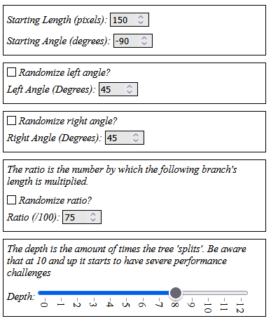
Branch generation settings as seen in Recurse³
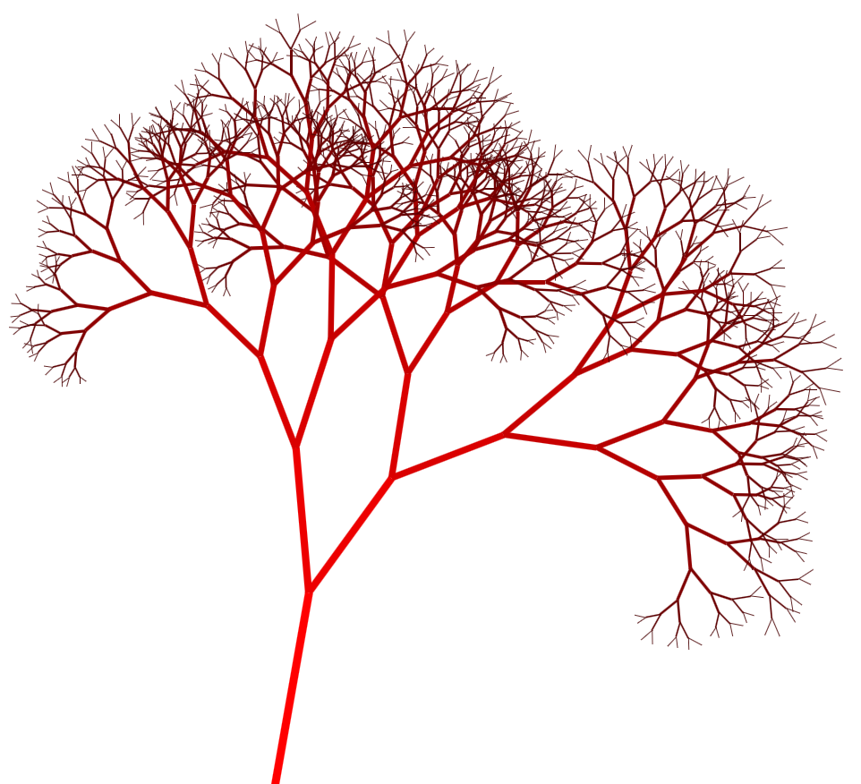
Depth-Based Width's veinyness on display, kind of gross?
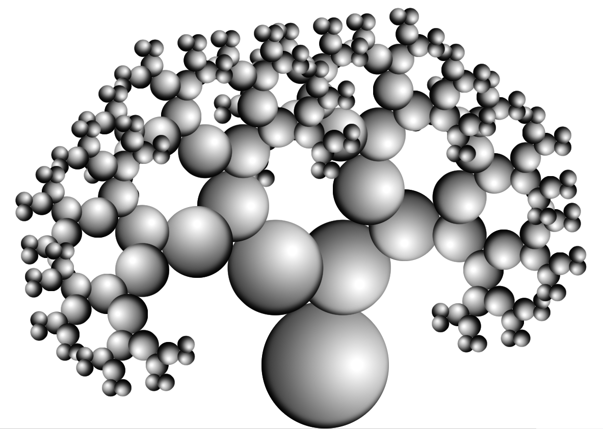
Combining Corner Rounding with a Radial Gradient Background and Inset Shadow can create a faux-3D orb effect.
Kind of looks like that interactive buddy flash game...
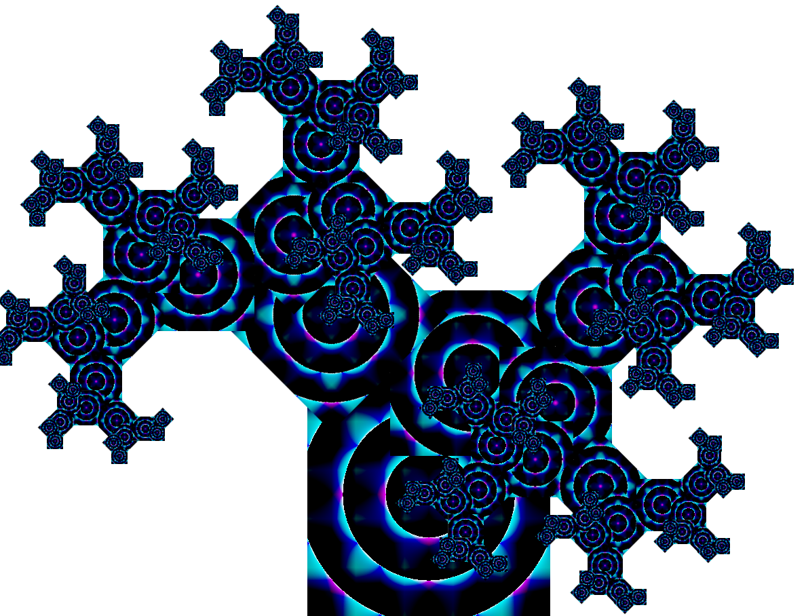
An example of the color-burn Background Blend Mode mixing a Radial and two Linear Gradient Backgrounds to create a trippy, phaser-y visual effect.
Never underestimate what some basic CSS can achieve!
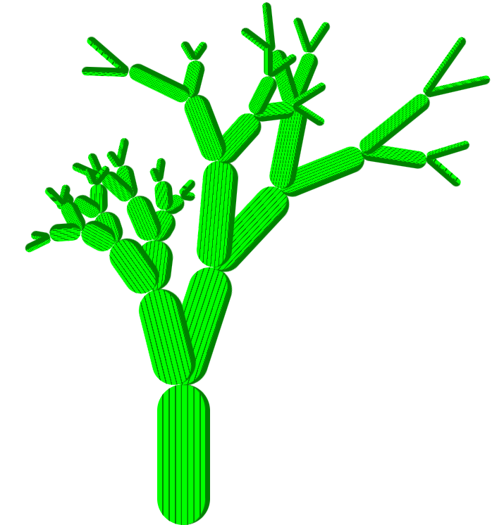
Border brings some cel-shaded depth to this cactus.
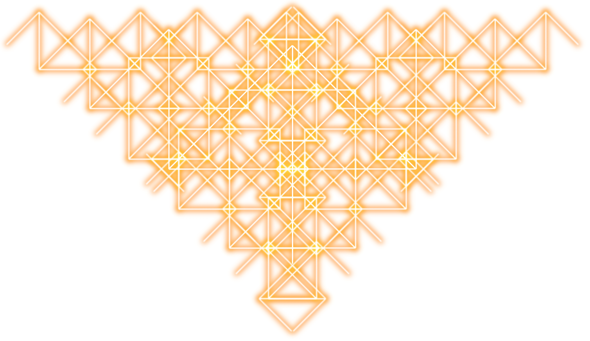
An alternative use for Shadow is to make glow effects, which is entertainingly antonymous.
Here a sort of angelic, art-deco neon symbol is achieved with an orange Shadow, the screen Mix Blend Mode, and Angles set at 135 degrees.
<div> elements positioned along a given branch. They can be generated, positioned, and styled in a number of ways.
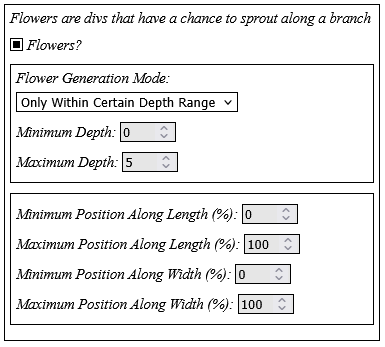
Flower generation options, as seen in Recurse³
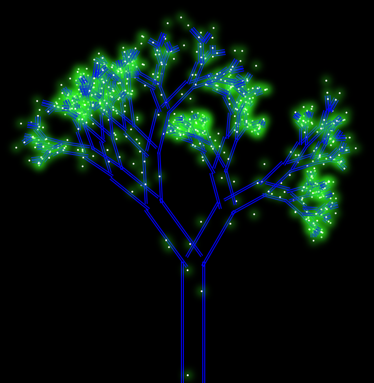
Setting Minimum values below 0 and Maximum values over 100 makes for floating flowers, which can here be seen used to create fireflies!
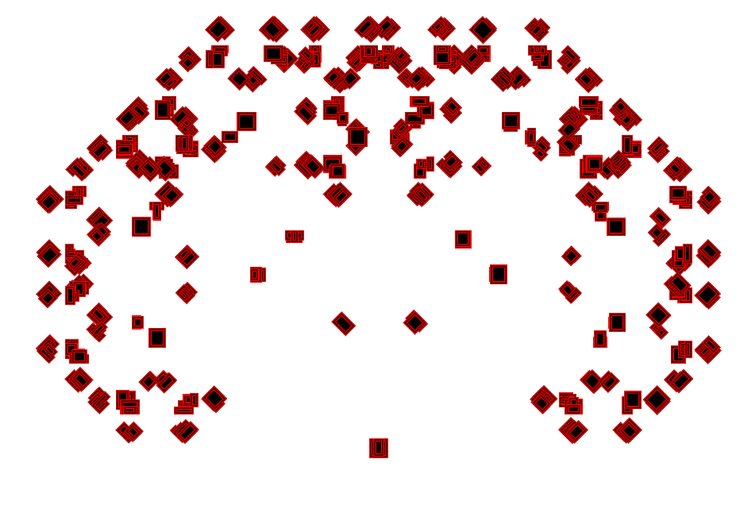
A cloud of blocks, made with Randomized Width and Height, and a double, red Border. Reminds me of the Number World in Yume Nikki somewhat.
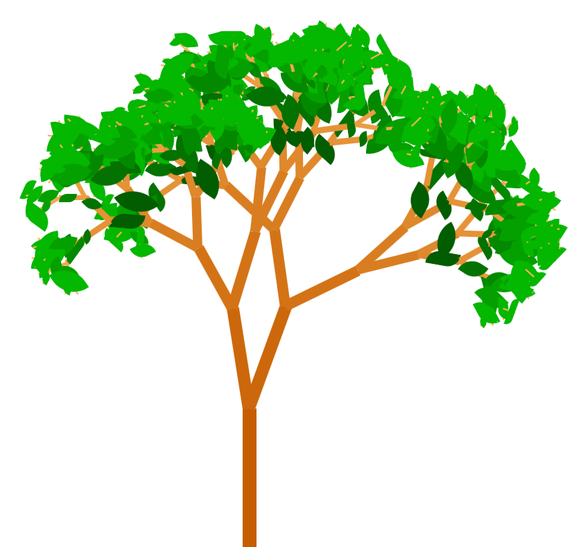
You can make some relatively naturalistic-looking trees with flowers
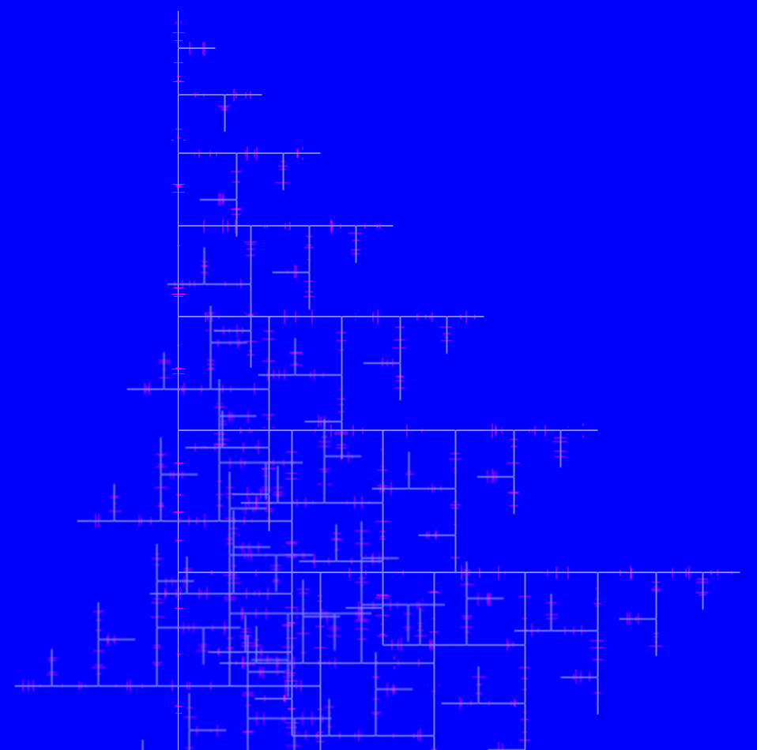
Here flowers are rigidly placed along the branches, similar to the measuring lines on a ruler or the knots on a quipu.
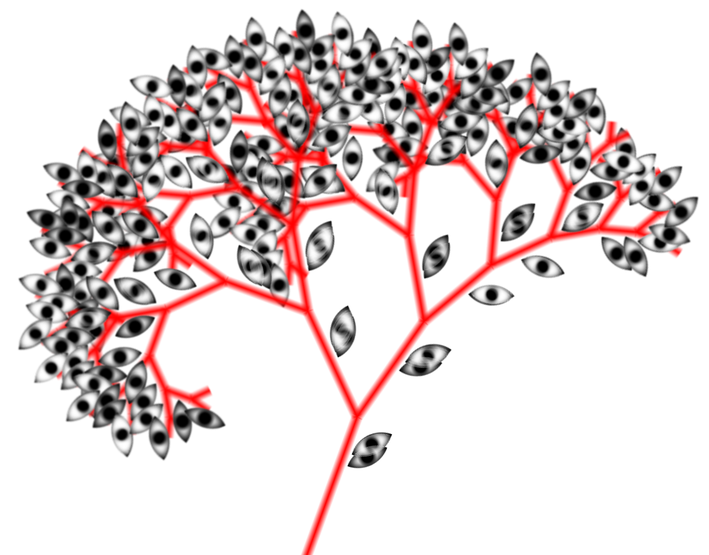
You can make eyes relatively easily in CSS, just with some Corner Rounding, a Background consisting of a radial-gradient(), and an inset Shadow!
Ominous Broccoli. Personally, I prefer bimi.
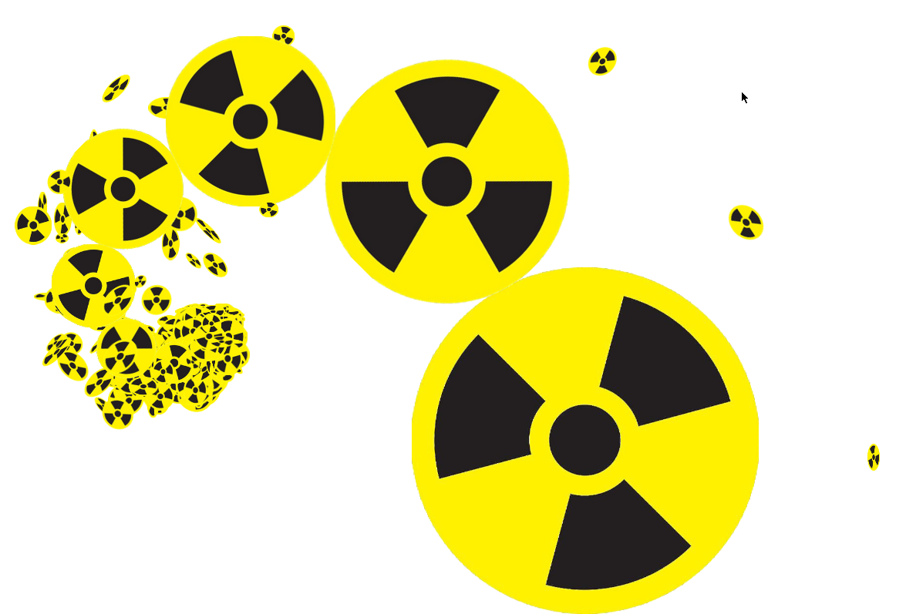
Note: When using images as branch backgrounds, it's good to be aware that if the image gets taken offline, it'll cease to function as a background. While arguably a poetic and beautiful feature of the internet, for maximum stability of your image you can either turn it into a permalink, TinyURL, or host the image yourself!
Currently does not feature an export function, so more of a desktop toy for the time being!
It works by highlighting a section of text and then pressing the desired incantation, which are generally able to stack onto one another if they don't directly override each other.
Be warned that Typist is quite buggy and prone to break your text! For example in the sentence:
"Good dogs are good, bad dogs are bad."
Highlighting the final 'bad' and applying an incantation to it will instead style the first-most occuring 'bad', which is unintended and at times annoying.
Practice some patience, and if you want to add your own incantations to Typist go to section 6 of the Toymaker Guides!
index.html in the root directory.
< a > element with a similar structure as the other desktop toys.
target attribute and second class of your toy to something short and descriptive, for example greyout.
< p > element with the folderName class, this is what be the text that appears under the toy icon.< a target="greyout">< div class="static greyout">< p class="folderName">Old-Timey< /p>< /div>< /a>
index.js in the root directory.
< a > element and attaches a click event to it, which then triggers a function called something similar and descriptive to the HTML element you just created.document.querySelector("a[target='greyout']").addEventListener('click', (event) => { Greyout() });
function Greyout() {
let allDivs = document.querySelectorAll("div");
for (let i = 0; i < allDivs.length; i++){
if (allDivs[i].classlist.contains("oldtimey") {
allDivs[i].classlist.remove("oldtimey");
} else {
allDivs[i].classlist.add("oldtimey");
}
}
playAudio("./sounds/webtoys/oldtimey.mp3");
}